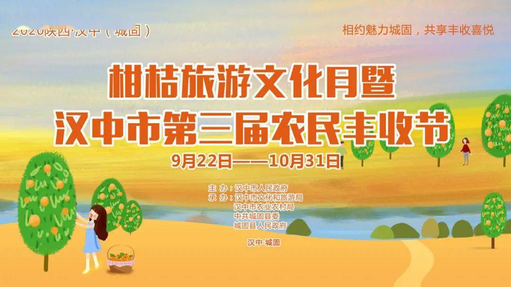
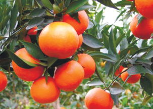

2020陕西·汉中（城固）柑桔旅游文化月暨汉中市第三届农民丰收节启动
 相约魅力城固，共享丰收喜悦。9月22日，2020陕西·汉中（城固）柑桔旅游文化月暨汉中市第三届农民丰收节在城固县桔园景区启动。 本次活动由汉中市人民政府主办，汉中市文化和旅游局、汉中市农业农村局、中共城固县委、城固县人民政府承办。汉中市委书记、市长方红卫宣布“2020陕西·汉中（城固）柑桔旅游文化月暨汉中市第三届农民丰收节活动”启动，陕西省扶贫开发办公室副巡视员江宝齐出席启动仪式，汉中市委常委、市委秘书长王浩，汉中市人大常委会副主任徐有业，汉中市副市长周景祥，汉中市政协副主席李应德为受表彰的汉中市优秀高素质农民领军人才颁奖，汉中市副市长、城固县委书记陈心亮主持启动仪式，城固县委副书记、县长胡新利致辞，市文化和旅游局局长王耀介绍节会活动内容，出席活动的省市县主要领导共同推动启动轴，正式拉开本次节会帷幕。 启动仪式现场锣鼓喧天，人潮涌动，鲜花怒放。上午10：00，启动仪式在热闹的大型歌伴舞《桔子红了》中正式开始。仪式上，表彰了汉中市优秀高素质农民领军人才，城固县“十佳职业农民”“十佳农业经营主体”“十佳农技员”，原公镇、文川镇分别同时举行了分会场活动。极具地方特色的城固本土民俗表演《水兽舞》《高跷社火》、杂耍《喷火》《南狮舞》等文艺节目和深受戏迷欢迎的秦腔《下河东》片段、传统折子戏《打镇台》《拾玉镯》《三对面》等节目先后登台表演。演出通过歌伴舞、情景剧、魔术、戏曲等形式，从不同的角度展示出张骞故里神奇桔乡深厚的文化底蕴，表达出桔乡儿女庆祝丰收、赞美幸福生活的喜悦之情。精彩纷呈的演出吸引上万名群众前来观看，现场不时响起阵阵掌声。 十余项具有浓厚地方特色的主题宣传活动在启动仪式现场同步举行。科举文化展示给游客再现了状元衣锦还乡，感恩家乡父老的情景；“庆丰收”民间文艺展演向游客展示城固本土文化艺术；“桔乡美食汇”通过现场制作城固特色美食，邀请来宾及游客品尝，用美食传递丰收的喜悦。